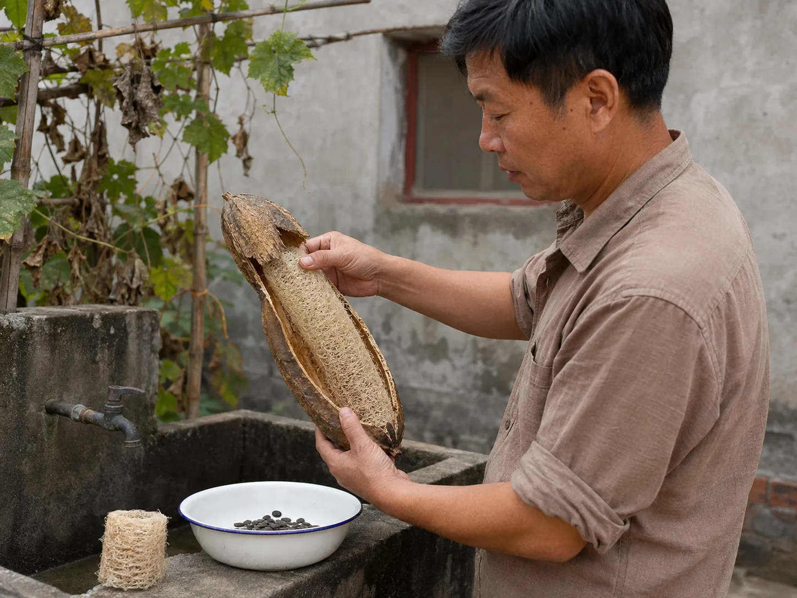

The Dried Loofah Beside the Kitchen Sink
My uncle left one loofah on the vine until its skin turned brown, then opened the dry shell above an enamel bowl at the courtyard sink.

One gourd left on vine
My uncle picked the green loofahs for the kitchen through July, but he always left one hanging above the courtyard sink. Its skin lost its shine, darkened at the ridges, and became lighter as the weeks passed. By late summer, wind made the whole dry body tap against the bamboo support. Nobody mistook it for the tender green ones carried indoors for supper.
He reached up only after the stem had turned brown. When he shook the gourd beside his ear, seeds moved freely inside with a flat wooden rattle. I followed him to the sink, where he placed an enamel bowl beneath his hands before splitting the brittle skin.
Seeds behind the brittle skin
The shell came away in long flakes and exposed a pale network packed tightly around the center. My uncle pulled the fibers open with both thumbs, then knocked the gourd against his palm. Black seeds dropped into the bowl, while a few remained caught deep in the dry channels and had to be picked loose one by one.
Soap pods released their sticky interior after soaking, and rice water between kitchen and washroom carried a used liquid from one task to another. The dried loofah required neither kind of mixture; the emptied plant body became the object held against the pot.
Fibers beside the kitchen sink
He cut the long network into three thick cylinders and set one beneath the tap. At first it resisted his fingers, but water softened the fibers enough for them to bend around the blackened rim of an iron pan. Fine pieces of the brittle shell floated briefly in the basin. The remaining pieces stayed dry on the ledge for another day.
After the pan was rinsed, my uncle squeezed the wet cylinder once over the basin. He wedged the rinsed loofah against the sink ledge. One last drop fell from the tip of the fibers into the basin.